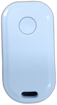
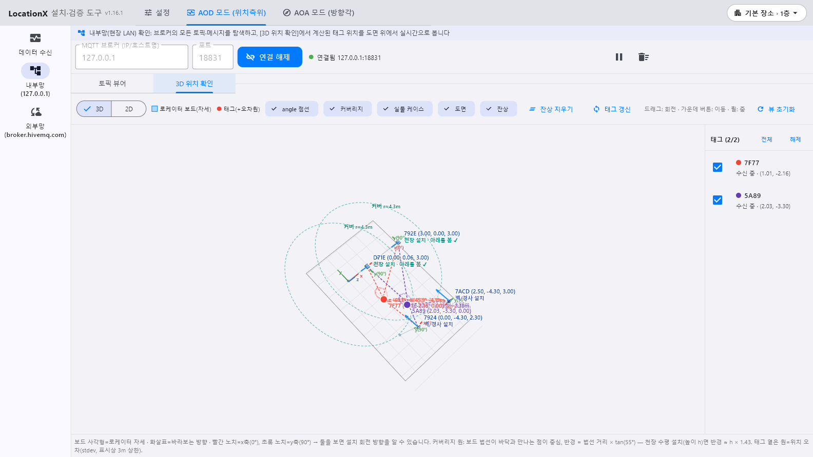

실제 장비 · 실시간 연결
LocationX 실내 위치추적 시스템
LocationX 실내 위치추적 시스템
지금 실제로 동작하는 모습입니다
GPS가 닿지 않는 실내에서 사람·물건의 위치를 실시간으로 찾아 줍니다. 천장이나 벽에 로케이터를 달고, 찾고 싶은 대상에 작은 태그를 붙이면 로케이터가 태그 신호(블루투스)가 오는 방향을 재서 위치를 계산합니다. 아래 화면은 컨트롤비트에 설치된 실제 장비의 데이터입니다.
👆 눌러 보세요 — 아래 입체 화면이 그 현장으로 바뀌고, 실제 태그가 지게차·작업자 등에 붙어 움직입니다 로케이터천장·벽에 설치하는 수신기
로케이터천장·벽에 설치하는 수신기태그 방향 측정 · 랜선 1가닥(PoE)

태그사람·물건에 붙이는 발신기저전력 · 무선 업데이트

서버 + 소프트웨어위치 계산 · 설치 도구내 시스템과 연동(MQTT)